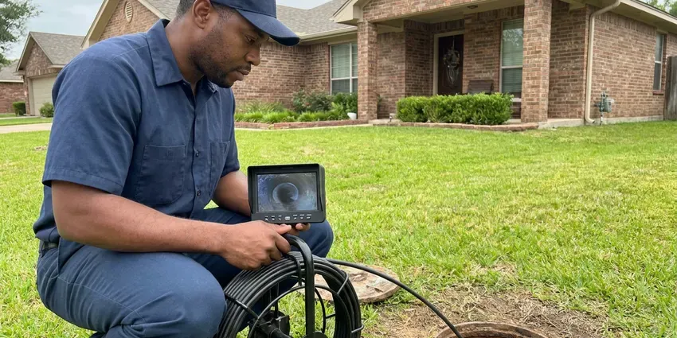

Polybutylene Plumbing Replacement in Southaven, MS
DFM Plumbing offers dependable polybutylene plumbing replacement for homeowners in Southaven, MS.
- Code Compliant Work
- Local Southaven experts
- Upfront pricing
- Drywall Patching Included

Secure Your Home: Get Polybutylene Plumbing Replaced in Southaven, MS.
Don't wait for a burst pipe, contact us for a free estimate on upgrading your home's plumbing.
Polybutylene Plumbing Replacement for Mississippi Homes in Southaven, MS
At DFM Plumbing, we understand the unique challenges polybutylene piping presents to homeowners in Southaven, MS. Our team provides complete replacement services, upgrading your home to modern, durable materials like PEX or copper to provide long-term plumbing reliability and peace of mind.
Our expertise includes:
- Yard service line replacement from the meter to the house
- Precise leak detection and pipe assessment.
- Limit disruption to your home.

Additional Plumbing Maintenance Services in Southaven, MS
Our maintenance and specialty plumbing services in Southaven, MS catch small problems before they become emergencies.


Customers
Why Choose DFM Plumbing for Polybutylene Plumbing Replacement in Southaven, MS?
Our experienced team understands the challenges of replacing these systems in Mississippi homes, from slab foundations to finished walls.
- Clean Worksite, We take care to protect your home during the replacement process and clean up completely afterwards.
- Prevent Leaks, Proactive replacement prevents costly water damage and mold problems.
- Expert Assessment, Our team reliably identifies polybutylene piping and assesses the best replacement strategy for your home.
Citywide Coverage
From single-story ranch homes to two-story houses and manufactured homes, we serve Southaven and surrounding areas. Every job gets the same full replacement standard.
Experienced Team
Our plumbing technicians have extensive experience specifically with polybutylene pipe systems, understanding their common failure points and the best methods for replacement. They are continuously trained on the latest materials and installation techniques to deliver a superior job every time.
Safety-First Approach
Safety is a top priority in all our polybutylene plumbing replacement projects. We closely follow all Mississippi plumbing codes and industry best practices, ensuring that your new plumbing system is not only functional but also completely safe and compliant.
Trusted Certified Southaven Plumbing Services Professionals
At DFM Plumbing, we take pride in providing certified plumbing services throughout Southaven, MS. Backed by leading industry credentials, our experienced plumbers combine technical skill with genuine customer care. Whether it is repair, installation, or maintenance, we follow strict safety and quality standards to deliver lasting results you can trust.
Call Us Now PHCC Plumbing Contractor Recognition
PHCC Plumbing Contractor Recognition Better Business Bureau (BBB) Accreditation
Better Business Bureau (BBB) Accreditation Angi Certified Pro
Angi Certified Pro ISO 9001 Quality Management Certification
ISO 9001 Quality Management CertificationLasting Polybutylene Plumbing Replacement Services in Southaven, MS
Copper Pipe Replacement in Southaven
For homeowners who prefer a traditional, sturdy solution, copper piping is an excellent alternative to polybutylene. Copper is highly durable, resistant to bacteria growth, and has a proven track record of longevity. While typically a higher investment than PEX, copper offers superior strength and reliability. We provide precise copper pipe installation services across Southaven.

Insurance and Home Sale Documentation in Southaven
Some insurers decline or surcharge policies on homes with polybutylene. Buyers and lenders may also ask about it during inspections. After replacement we provide permit records, invoices and photos showing the new system. That paperwork helps with insurance renewals and real estate transactions.
Yard Service Line Replacement in Southaven, MS
Many poly-era homes also have blue or black polybutylene service lines running from the water meter to the house. These buried lines can split and leak under your yard, raising your bill and soaking the soil. We call 811 to mark utilities, trench the route and install new PEX or copper service pipe. The new line connects to a new main shutoff at the house.
Emergency Polybutylene Pipe Repair in Southaven, MS
A burst polybutylene pipe is an emergency that requires immediate attention, since water damage can spread quickly. DFM Plumbing offers emergency services to address sudden pipe failures in Southaven, MS. While a full replacement is the long-term solution, we can provide temporary repairs to stop the flow of water and limit damage, securing your property until a comprehensive repipe can be scheduled. Don't wait to call us if you experience a sudden leak or burst pipe.
Full Home Repiping with PEX in Southaven
When a home with polybutylene pipes sits on a slab foundation, repiping becomes a more complex process. Our team specializes in full home repiping using PEX (cross-linked polyethylene), a flexible, durable, and corrosion-resistant material. PEX is an strong choice for Mississippi homes, as it resists freezing better than rigid pipes and expands to handle temperature changes. We carefully plan the repipe to minimize disruption, often running new lines through attics or existing wall cavities, ensuring a complete and long-lasting upgrade for your entire plumbing system.
Polybutylene Leak Detection and Repair in Southaven
Before a full replacement, or if you suspect polybutylene problems, our team offers modern leak detection services. We can pinpoint the exact location of leaks, often hidden behind walls or under floors. While repairs on polybutylene are temporary, identifying the source helps in planning a complete replacement strategy for your Southaven property.
Full Home Polybutylene Repiping in Southaven
Our comprehensive full home repiping service involves removing all existing polybutylene pipes and replacing them with modern, durable alternatives. This is often the most effective solution to permanently eliminate the risks associated with this faulty piping. We ensure minimal disruption, carefully planning the project to complete it efficiently and restore full plumbing functionality to your Southaven home.

Fitting Failure and Emergency Repair in Southaven
Acetal plastic and copper crimp ring fittings are often the first part of a poly system to fail. A burst fitting in an attic or wall can cause major damage in minutes. We respond to emergency leaks, make temporary repairs and then schedule a full replacement. Stopping the problem for good is the only lasting fix.
Polybutylene Plumbing Replacement Near Me in Southaven, MS
If you're searching for 'polybutylene plumbing replacement near me' in Southaven, MS, DFM Plumbing is your local expert. Our crews are strategically located to provide rapid response and efficient service across the entire metro area.
If you are searching for polybutylene replacement near me, DFM Plumbing offers free inspections throughout Southaven. We confirm what pipe you have and explain your options. Then we give you a firm written price.
DFM Plumbing at a Glance
- Fully licensed plumbing team covering Southaven, MS
- Same-day appointments and 24/7 emergency response
- Clear written estimates, no hidden fees
- 4.8-star rated by 503+ Mississippi customers
Southaven Map
Southaven Information
- Population
- 56,851
- Area codes
- 662/731/901
- Service area
- Southaven and communities within 40 miles
- Nearby
- Horn Lake, Olive Branch, Oxford, Tupelo
Polybutylene plumbing replacement is especially critical for older homes in Southaven, MS where fluctuating temperatures and local water chemistry can accelerate the breakdown of these problematic pipes, leading to unexpected and costly water damage.
Expert Services
Trust our professionals for reliable DFM Plumbing solutions in Southaven, MS.
Our Specialized Plumbing Services in Southaven, MS
At DFM Plumbing, we provide a complete range of plumbing services across Southaven, MS. From leak detection to full system installations, our team ensures fast, precise, and affordable service for both residential and commercial properties. Explore our core services below:


Here Is How Our Polybutylene Plumbing Replacement Process Works in Southaven, MS
Our polybutylene plumbing replacement process is designed for efficiency and minimal disruption to your Southaven, MS home.
Request a Quote
Call (601) 265-9260 to schedule a free polybutylene inspection. We confirm the pipe type and give you a written replacement price.
Replace and Test
Our crew installs new PEX or copper lines to every fixture and pressure tests the system. Water is restored at the end of most work days.
Patch and Document
We patch and texture wall openings and pass the final inspection. You receive photos, permits and warranty documents for your files.
Frequently Asked Questions About Polybutylene Plumbing Replacement in Southaven
The cost for polybutylene plumbing replacement in Southaven, MS varies widely based on factors like the size of your home, the chosen replacement material (PEX is typically $4,000 to $10,000, while copper can be $8,000 to $15,000 or more), and accessibility of pipes. We provide a detailed, upfront quote after a complete home assessment.
Both PEX and copper are excellent choices. PEX is flexible, less expensive, more freeze-resistant, and handles ground movement better than rigid pipe. Copper offers superior rigidity, a long lifespan, and a strong track record. The 'better' choice depends on your budget, preferences, and home's specific needs.
Most policies do not pay for replacing old pipe, though they may cover sudden water damage. Some insurers raise rates or decline coverage for homes with polybutylene.
Polybutylene pipe replacement is a complex plumbing project that requires specialized tools, knowledge of plumbing codes, and significant experience. Attempting a DIY replacement can lead to costly mistakes, leaks, and potential code violations. It is best left to licensed plumbers.
DFM Plumbing stands behind our work with comprehensive warranties on both materials and labor for polybutylene plumbing replacement. The specific warranty details will be outlined in your service agreement, providing you with peace of mind for your new plumbing system.
We use quality, industry-leading brands for our replacement materials, such as Uponor AquaPEX or Viega PEX for PEX systems, and reputable manufacturers for copper piping. We ensure all materials meet or exceed industry standards for durability and performance.
Yes, whole-home repiping typically requires a permit and inspection. We handle permits and scheduling with your building department.
Common signs include frequent leaks, especially pinhole leaks, discolored water, low water pressure, or visible cracks in the gray or blue plastic pipes and fittings. If your home was built between 1978 and 1995 and has these pipes, replacement is highly recommended.
What People Are Saying About Our Plumbing Experts?

Mark T.
When our office needed drain cleaning, DFM Plumbing provided quick, reliable service. The plumber arrived on time and made sure every drain flowed perfectly before leaving. Very satisfied.
Drain Cleaning · Olive Branch, MS
James P.
Our commercial plumbing system had a leak under the sink, and DFM Plumbing handled it professionally. The plumbers arrived quickly and restored everything without disruption to our customers.
Commercial Plumbing · Horn Lake, MS
Sofia M.
Two new toilets installed in one visit, no mess left behind, and the tech even adjusted a faucet he noticed was dripping. Fair pricing and really friendly.
Toilet Installation · Southaven, MS
Patricia H.
We had a slab leak that two other companies could not find. DFM Plumbing located it in under an hour, explained our options, and the price matched the quote to the dollar.
Slab Leak Repair · Starkville, MS
Emily R.
I called DFM Plumbing for plumbing repair, and the technician was fast, polite, and thorough. They explained the problem clearly and fixed it the same day. I will definitely hire them again. Highly recommended!
Plumbing Repair · Starkville, MSLaura S.
I scheduled a water heater replacement, and the team made the process smooth and affordable. The new unit works perfectly, and they cleaned up after completing the job.
Water Heater Replacement · Greenville, MS